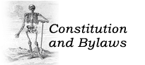

|

CONSTITUTION
Article I. Name The name of the Association shall be the
Archivists and Librarians in the History of the Health Sciences.
Article II. Purpose This Association is established
exclusively for educational purposes to serve the professional interests of
librarians, archivists, and other specialists actively engaged in the
librarianship of the history of the health sciences by promoting the
exchange of information and by improving standards of service.
Article III. Objectives
To accomplish these ends, this Association is committed to the
following:
a. to identify and make contact with persons similarly
engaged;
b. to provide opportunities to hold meetings on appropriate
occasions;
c. to issue a newsletter and such other materials as may seem
appropriate;
d. to cooperate with other similar organizations in projects
of mutual concern;
e. to provide opportunities for educational and professional
growth programs
Article IV. Membership Any person interested in the
history of the health sciences may become a member of the Association by
complying with the provisions of the Bylaws.
Article V. Meetings Meetings shall be held as provided
in the Bylaws.
Article VI. Officers and Elections Section
1
Elected officers shall consist of such officers as provided
in the Bylaws, who shall be nominated and elected as provided in the
Bylaws.
Section 2
Appointed officers shall be such officers
as provided in the Bylaws, who shall be appointed as provided in the
Bylaws.
Article VII. Amendments to the Constitution
This Constitution may be amended or rescinded as provided in the Bylaws.
Article VIII. Dissolution
Dissolution of the Association for any cause may be initiated by the same
mechanism used for amending the Constitution. Dissolution must be in accordance
with the applicable regulations of the 1954 Internal Reveue Code, Section 501,
or any amendments thereto.
After the payment of any outstanding debts and obligations, the residue of all funds or
other assets of the Association including any rights to funds, present or
future, contingent or actual, shall be irrevocably assigned and transferred to
the American Association for the history of Medicine, which has qualified as an
exempt organization under Section 501 of the 1954 Internal Revenue Code, or any
amendments thereto.
BYLAWS
Article I. Members
Section 1
Membership shall be open to librarians
and archivists with responsibilities for collections and services in the
history of the health sciences, and to any other persons interested in health
science history collections.
Section 2
Dues shall be set by the Steering
Committee and approved by majority vote in a mail ballot submitted to the
membership nine weeks before the Annual Meeting. Dues shall be payable upon
joining the Association, and shall be assessed on an annual basis for the
period of the fiscal year.
Section 3
The fiscal year of the Association shall
be the calendar year.
Section 4
Rights and Privileges: Members in good
standing shall be eligible to hold elective office, to be appointed to
committees and to vote in Association elections and business meetings.
Section 5
Suspension and Reinstatement. If dues
are unpaid two months after the renewal date, the dues shall be considered to
be in arrears and the member shall be suspended from all rights and
privileges of membership. Rights and privileges shall be reinstated upon
payment of the arrears. If a member who has been suspended for unpaid dues
does not reinstate membership within a twelve-month period following
suspension, a new application for membership must be made.
Article II. Officers
Section 1. Officers
1. Officers of the Association shall be President,
President-Elect, Immediate Past-President, Secretary, Treasurer, and four
Members-at-Large.
2. Officers shall take office at the close of the Annual
Meeting and serve until the close of the Annual Meeting at the end of their
terms of office.
3. The term of office of the President shall be one year as
President-Elect, two years as President, and one year as Immediate Past-
President. President-Elect shall be elected in odd numbered years, at the
beginning of the second year of the sitting President's term of office. The
term of office shall begin at the end of the annual business meeting. The
past president must wait two years from the completion of a presidential term
of office before being eligible to serve as President-Elect.
4. Both the Secretary and the Treasurer shall each serve a term
of two years. The Secretary shall be elected in even years and the Treasurer
shall be elected in odd years. No member shall serve more than two consecutive
terms as either Secretary or Treasurer.
5. The Members-at-large shall serve terms of two years,
two being elected each year.
Section 2. Vacancies
1. A vacancy arising in the office of President shall be filled
by the Immediate Past-President, if during Year One of the President's term,
or by the President Elect, if during Year Two. The President-Elect shall
serve out the unexpired term of the President and continue as President for
the full term as elected.
2. All other vacancies shall be filled by the Steering
Committee.
Section 3. Duties
1. The President shall act as Executive Officer of the
Association and shall preside at all meetings of the Association and the
Steering Committee. The President shall serve as ex officio member of all
Committees.
2. The President elect shall perform the duties and exercise
the functions of the President during the President's absence or inability to
act during the second year of the President's term of office.
3. The Immediate Past-President shall assist in the orientation
of the President perform the duties and exercise the functions of the
President during the President's absence or inability to act during the first
year of the President's term of office.
4. The Secretary shall keep the correspondence and
records of the Association, record votes and decisions, and
supervise the updating of the membership directory.
<5. The Treasurer shall receive
dues and pay the Association's bills. A statement of accounts shall be
submitted to the Steering Committee nine (9) weeks prior to the Annual
Meeting.
6. The Members-at-large shall assist the President in
conducting the business of the Association.
Article III. Nominations and Elections
The Nominating Committee shall prepare annually a slate of nominees for
each office whose incumbent is completing a term of office. The slate shall
be submitted to the membership nine weeks in advance of the Annual Meeting.
If the slate contains a single name for an office, the ballot shall provide
for write-in nominations.
Article IV. Committees
Section 1. Standing Committees
A. Standing Committees of the Association shall be the
Steering Committee, Program Committee, the Nominating Committee, the Awards
and Recognitions Committee, the Newsletter Editor, and
the Website Editor. The President
shall serve as ex officio chair of the Steering Committee and shall appoint a
chair for each additional Standing Committee.
B. The Steering Committee shall consist of all elective
officers of the Association and shall conduct the business of the Association
between regular membership meetings.
C. The Program Committee shall be responsible for planning the
Annual Meeting program.
D. The Nominating Committee shall recommend members to serve
in the positions of a. President-elect b. Secretary c. Treasurer and
d. two Members at Large. New members shall be appointed to the Nominating Committee
each year, with no member serving consecutive years.
E. The Newsletter Editor will be responsible for
publication of The Watermark and will appoint a member to handle
advertising for the publication.
F. The Website Editor will be responsible for maintenance of
the ALHHS website and will appoint a member to handle maintenance
of the listserv.
G. The Awards and Recognitions Committee will be responsible
for determining the recipients of all grants and honors bestowed by the
organization.
H. The President shall appoint an auditing committee three
months prior to the Annual Meeting. The Committee shall review the
Treasurer's account books and report to the Association at the Annual
Meeting.
Section 2. Other Committees
With the advice and consent of the Steering Committee, the president shall
appoint such other committees as are necessary for the work and enhancement
of the Association.
Article V. Meetings
Section 1. Regular meetings of the Association shall be held yearly, in
conjunction with the annual meeting of the American Association for the
History of Medicine, unless otherwise ordered by the Association or the
Steering Committee.
Section 2. A quorum of twenty percent of members in good standing shall be
required in order to transact the Association's business.
Article VI. Amendment and Dissolution
Section 1. The Constitution and Bylaws of the Association may be amended
by an affirmative vote of two thirds of the members, by mail ballot or at any
regular meeting of the Association, provided that the amendment has been
submitted in writing to the membership at least nine weeks prior to the
meeting. Any proposed changes to the bylaws must first be approved by two-
thirds vote of the Steering Committee.
Section 2. The Association may be dissolved by an affirmative vote of two-
thirds of the members, by mail ballot or at any regular meeting of the
Association, provided that the motion has been submitted in writing to the
membership at least nine weeks prior to the meeting. Dissolution of the
Association must also be approved by two-thirds vote of the Steering
Committee. In the event of the dissolution other than for purposes of
operation of law, none of the property of the Association nor any proceeds
thereof nor any assets of the Association shall be distributed to any members of
the Association but after payment of the debts of the Association any residue of
the property and assets shall be donated to the American Association for the
History of Medicine.
Adopted after ratification by mail ballot, Summer, 1989.
Article I. Members revised at the Annual Meeting, 1994.
Article II. Sections A. and F. revised by the membership at the Annual
Meeting, 1996.
Article V. Section 2 revised by the membership at the Annual Meeting,
1996.
Bylaws Revised November 2000.
Bylaws Revised April 2003.
Bylaws Revised January 2004.
Bylaws Revised October 2009.
Bylaws Revised October 2010.
[Website last updated 12 October 2010]
|